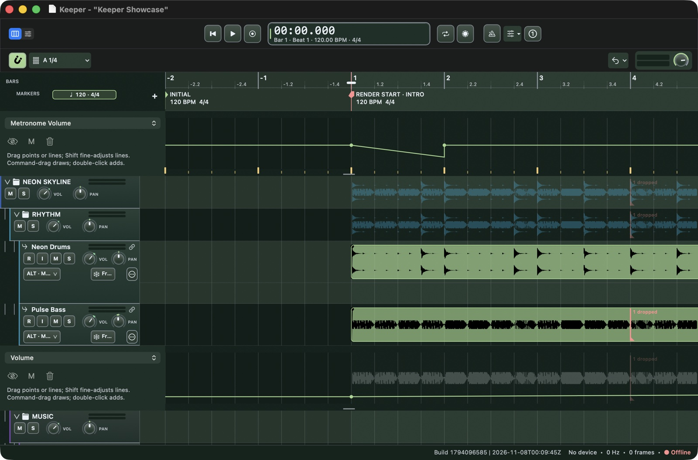
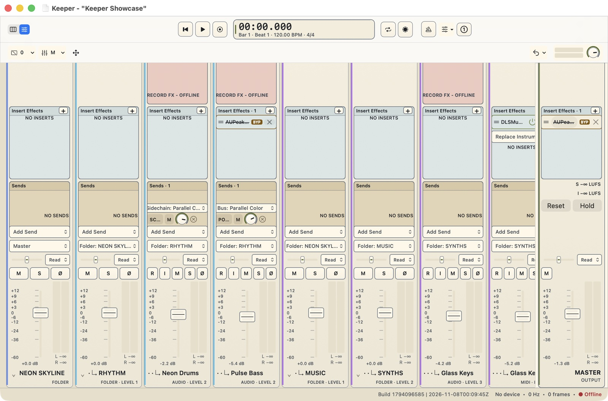

Keeper
Keeper is a native digital audio workstation (DAW) for Apple Silicon Macs, focused on capturing and editing musical performances, both audio and MIDI, in a traditional linear arrangement timeline.
It takes inspiration from REAPER, Logic, and Pro Tools, and aims to offer the best editing and comping capabilities of any DAW.
It is meant to be a minimal, inspiring environment to record music without getting in your way. There is no AI assistant or plug-in marketplace; the focus is on recording and editing music.
Download
Download Keeper and read release notes on GitHub.
Current builds require an Apple Silicon Mac (M1 or newer) running macOS 26 or newer. Download the ZIP, unzip it, and move Keeper.app to Applications.
Capabilities
- Multitrack audio recording and input monitoring.
- Take folders, take auditioning, and swipe comping to combine sections from different takes.
- Non-destructive audio editing, including trimming, splitting, fades, and crossfades.
- MIDI recording and piano-roll editing for notes and controllers, with Audio Unit instrument support.
- A mixer with effects inserts, sends, buses, and automation.
- Stereo mix and track-stem export in WAV and AIFF.
Metronome track
A dedicated metronome lane above the tracks shows where the clicks fall, including bar accents, tempo changes, and swing. It has its own volume automation, and the click positions stay visible even when the metronome is off.
Use normal, half-time, double-time, or quadruple-time clicks, or build a custom three-voice pattern. Adjust pitch, brightness, decay, and an optional low downbeat tone. Different song sections can use different settings and follow project swing or stay straight. A one-bar recording count-in is also available. The metronome is not included in exported mixes.
Automation
Automate volume, pan, stereo width, mute, send levels, playback-effect bypass, and supported Audio Unit parameters. Show multiple automation lanes alongside the tracks, draw curves, drag points and line segments, or enter exact point values.
Read, Touch, Latch, and Write modes let you play back or record control movements. Optional Automation Follows Edits carries supported automation with item moves, duplicates, and clipboard edits. Live input instruments and Record FX are not timeline-automation targets.
Tempo and swing grids
Use tempo and time-signature changes, gradual tempo ramps, and named timeline markers to structure a song. Editing grids offer straight and triplet divisions, with a fixed note division or adaptive resolution that follows zoom.
Apply eighth- or sixteenth-note swing by song section, with optional per-track overrides. The percentage follows the Linn/MPC convention: 50% is straight and about 66.7% gives a triplet feel. Grids and MIDI playback follow the groove without rewriting the source notes. Changing swing does not move or automatically time-stretch existing audio.
Apollo DSP integration
Keeper includes experimental Apollo Advanced Realtime Monitoring (ARM). It uses Apollo hardware DSP for live input monitoring, pairs qualified UADx effects with their UAD-2 equivalents, and hosts authentic UAD-2 editors inside Keeper without requiring the Console application to be open. Native effects remain available for playback.
This integration is currently developed and tested with an original Apollo x4, not all Apollo models or plug-ins. It requires compatible input routing and authorized DSP effects. Recording remains dry/pre-effects; enabled Record FX cannot be combined with ARM, and native-only inserts, Wet Effects, sends, and buses are not mirrored in the live DSP monitor path.
Color themes
Choose light or dark palettes from View > Color Themes. Options include Light, Dark, Parchment, Sage, Forest, Ocean, Nord, Dracula, Solarized Light and Dark, and Gruvbox Dark.
Themes cover Keeper's arrangement, mixer, editors, and controls. Third-party plug-in interfaces retain their own appearance. Changing the theme does not change project content or audio.
Screenshots
Actual Keeper windows using a generated demo project, with audio hardware disabled. The demo includes example capture-discontinuity markers. Select an image to view it full size.


Alpha status
Keeper is still in alpha development. Bugs are expected, and features and the project format may change. Test with copies of projects, keep separate backups, and do not rely on it for irreplaceable recordings or production deadlines.
Current builds are ad-hoc signed and are not notarized. See each release for installation instructions and known limitations.